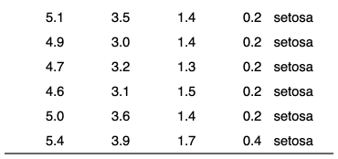

| delete_part {flextable} | R Documentation |
indicate to not print a part of the flextable, i.e. an header, footer or the body.
delete_part(x, part = "header")
x |
a |
part |
partname of the table to delete (one of 'body', 'header' or 'footer'). |

ft <- flextable( head( iris ) ) ft <- delete_part(x = ft, part = "header") ft